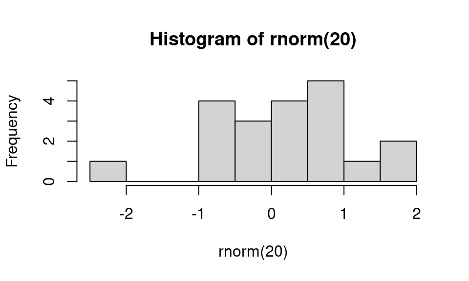

quarto render demo.qmd --to html
quarto render demo.qmd --to pdf
# Output depends on 'format' declaration at the top of the document (defaults to html):
quarto render demo.qmd An example Quarto Markdown file
Illustrating use of R, Python, bash and Julia code chunks
1 How to generate a document from this file
From the command line, you can render the file as follows:
Alternatively, start R and run the desired line from amongst the following possibilities in R:
library(quarto)
quarto_render("demo.qmd") # defaults to html
quarto_render("demo.qmd", output_format = "pdf")Or in RStudio (version at least 2022.07), click on the ‘Render’ button and choose to knit to HTML, PDF, or Word (for R Markdown).
Here is the rendered PDF version of this document.
2 Some basic Markdown formatting
Here’s an introduction to our critical discovery. Here we have some code to display inline but not evaluate: exp(7) and we can embed the code in a static code block as follows:
a = 7 %% 5
b = exp(a)This document will focus on embedding math and code and not on standard Markdown formatting. There are lots of sources of information on Markdown. RStudio has good information on R Markdown (including Markdown formatting).
You can directly use HTML formatting (for HTML output files) and LaTeX formatting (for PDF output files).
3 Embedding equations using LaTeX
This can be done with the following syntax. Note that you can’t have a space after the initial $ for the inline equations.
Here is an inline equation \(f(x) = \int f(y, x) dy\).
Here’s a displayed equation
\[ f_\theta(x) = \int f_\theta(y, x) dy. \]
3.1 LaTeX macros
You can define LaTeX macros in separate files and then use them as follows.
The macros for PDF rendering should be placed in a .tex file as shown in macros.tex. The macros for HTML rendering should be placed in a .md file, formatted as shown in macros.md.
(Unfortunately, it does seem to me that you need to have two separate files with the same macro definitions if rendering to both pdf and html.)
Then make sure to include those files as seen in the header of the qmd document like this:
format:
pdf:
include-before-body:
- file: macros.tex
html:
include-before-body:
- file: macros.mdWe can then use a macro in this equation:
\[ A = X \trans Y \]
4 Embedding code chunks
4.1 R code
Here’s an R code chunk
a <- c(7, 3)
mean(a)[1] 5b <- a + 3
mean(b)[1] 8When running R code, output is printed interspersed with the code, as one would generally want. Also, later chunks have access to result from earlier chunks (i.e., state is preserved between chunks).
Let’s make a plot:
hist(rnorm(20))
And here’s some inline R code: What is 3 plus 5? 8.
4.2 Python code
You can embed Python code. As with R, state is preserved so later chunks can use objects from earlier chunks.
import numpy as np
x = np.array((3, 5, 7))
print(x.sum())15x.min() 3try:
print("state is preserved if we see the value of `x[2]` next")
print(x[2])
except NameError:
print('state is not preserved: x does not exist')state is preserved if we see the value of `x[2]` next
7
Format of output from Python chunks
When using the jupyter rendering engine, all output is printed after all the code from the chunk. When using knitr engine, output appears directly after the code producing the output, as shown here.
print(1)1# Whether "1" and "2" are printed after all the code or interspersed
# depends on the engine used.
print(2)2
What output is printed from Python chunks
By default, only the output of the last line of Python code and explicit print calls are printed. But you can add ipynb-shell-interactivity: all to the yml header of the Quarto file to have all output printed.
There is no facility for inline Python code, so this: python print(3+5) does not print out “8”.
To display code from a file of Python code, you can use functionality in the inspect module. This code would display the definition of doubled() from the my_code module.
import my_code
import inspect
print(inspect.getsource(my_code.doubled))def doubled(x):
return 2*xThis will work for functions and for class definitions.
4.3 bash code
A bash chunk:
ls -l assets
df -h
cd /tmp
pwdtotal 99
drwxr-sr-x 2 paciorek scfstaff 3 Feb 25 14:37 css
drwxr-sr-x 6 paciorek scfstaff 6 Feb 25 14:37 fonts
drwxr-sr-x 2 paciorek scfstaff 3 Feb 25 14:37 img
drwxr-sr-x 2 paciorek scfstaff 3 Feb 25 14:37 js
-rw-r--r-- 1 paciorek scfstaff 92106 Feb 25 14:37 stat_bear.png
-rw-r--r-- 1 paciorek scfstaff 69 Feb 25 14:37 styles.css
Filesystem Size Used Avail Use% Mounted on
/dev/sda2 59G 32G 25G 57% /
tmpfs 16G 143M 16G 1% /dev/shm
tmpfs 3.2G 3.4M 3.2G 1% /run
tmpfs 5.0M 4.0K 5.0M 1% /run/lock
/dev/sdb1 111G 661M 105G 1% /tmp
/dev/sda1 499M 6.1M 493M 2% /boot/efi
/dev/sda3 59G 47G 9.3G 84% /var
/dev/sda5 2.6T 1.3T 1.2T 53% /var/tmp
oz.berkeley.edu:/pool0/accounts 67T 23T 45T 34% /accounts
tmpfs 3.2G 132K 3.2G 1% /run/user/3189
oz.berkeley.edu:/pool0/system 6.0T 4.9T 1.2T 81% /system
oz.berkeley.edu:/pool0/scratch 37T 35T 2.5T 94% /scratch
tmpfs 3.2G 32K 3.2G 1% /run/user/1463
/tmpUnfortunately, output from bash chunks occurs after all the code is printed and without any line spacing. Also, state is not preserved between chunks.
We can see that state is not preserved here, where the current working directory is NOT the directory that we changed to in the chunk above.
pwd # result would be /tmp if state were preserved /accounts/vis/paciorek/staff/tutorials/tutorial-dynamic-docsInline bash code won’t work so this: bash wc demo.Rmd has no effect, unlike with R code.
If you are using the jupyter engine and want to have both bash and Python chunks in a document, or you don’t want to have to install a bash Jupyter kernel, you can use ipython magic to run bash code within a Python chunk (results not shown here):
!echo "hello from python"
!pwdOne can also use zsh or other shell chunks, replacing the “bash” label with “zsh” or the other shell.
4.4 Embedding Julia code
You can embed Julia code. As with R and Python, state is preserved so later chunks can use objects from earlier chunks.
x = [3, 5, 7];
x[2]5try
println("state is preserved if we see the value of `x[2]` next")
print(x[2])
catch
print("state is not preserved: x does not exist")
endstate is preserved if we see the value of `x[2]` next
5There is no facility for inline Julia code, so this code: julia print(3+5) has no effect.
5 Controlling code chunk behavior
The Quarto syntax for specifying a chunk label (useful for debugging) and chunk options is as shown here, with the label defined using #|:
```{r}
#| label: put-options-in-chunk
b <- rnorm(5)
mean(b)
```[1] 0.08123054You have control over whether code in chunks is echoed (printed) into the document and evaluated using the include, echo, and eval tags.
Here we print out the code, but we don’t evaluate it:
```{r}
#| label: evalChunk
#| eval: false
cat("This code is printed in the document, but the code is not evaluated.")
mean(b)
```Here’s the result of a chunk with echo set to false so the code itself does not show up in the rendered document.
This code is not printed in the document, but results of evaluating the code are printed.Here’s a chunk with include set to false, hence neither the code nor output from running the code show up in the rendered output.
Results of intensive calculations can be saved using the cache: true tag so they don’t need to be rerun every time you compile the document.
```{r}
#| label: slow-step
#| cache: true
a <- mean(rnorm(5e7))
a
```[1] 8.558468e-05You can use variables (an R variable here) to control the chunk options. Note that the variable myControlVar is defined in the first chunk of this document. Here it is used to turn off evaluation of the chunk code.
```{r}
#| label: use-var-in-chunk-option
#| eval: !expr '!myControlVar'
print("hi")
mean(b)
```You can control which executable is used to execute a given chunk of code by (particularly useful for Python and bash and for debugging), using the engine.path chunk option.
```{python}
#| eval: false
#| engine.path: /usr/bin/python2
a = 3
print a
```It’s not uncommon to have various Python executables installed (different versions, in Conda/Mamba environments, etc.) on your system or to be unclear about which shell is being used to execute a shell chunk. Manually setting engine.path can help figure things out or work around problems.
6 Reading code from an external file
It’s sometimes nice to draw code in from a separate file. Before invoking a chunk, we need to read the chunks from the source file, which contains the chunks tagged with some special formatting.
This only works with the knitr engine.
```{r}
#| label: read-chunk
library(knitr)
read_chunk('demo.R') ## contains external_chunk_1 and external_chunk_2 of R code
read_chunk('demo.py') ## contains external_chunk_3 of Python code
```Note that a good place for reading the source file via read_chunk() is in an initial setup chunk at the beginning of the document.
Here are two R chunks whose code is in demo.R.
a <- 7
cat("a is ", a, ".\n", sep = "")a is 7.a <- 9
cat("Now, a is ", a, ".\n", sep = "")Now, a is 9.And here is a Python chunk whose code is in demo.py.
a = [3,4,5]
print(len(a))3As mentioned earlier, to display function or class definitions from a file of Python code, you can use functionality in the inspect module. This code would display the definition of doubled() from the my_code module.
import my_code
import inspect
print(inspect.getsource(my_code.doubled))7 Formatting of long lines of code and of output
In general, it’s best to keep lines of code to at most 80 characters. This will help with code readability in the file with the code and with the output that is rendered not going into the margin.
For HTML output, you can set code-overflow: wrap in the yml frontmatter to enforce line-wrapping for code.
For PDF output, you can insert the following LaTeX in the yml frontmatter:
include-in-header:
text: |
\usepackage{fvextra}
\DefineVerbatimEnvironment{Highlighting}{Verbatim}{breaklines,commandchars=\\\{\}}7.1 R code
Having long lines be nicely formatted and other aspects of formatting can be a challenge. Also, results can differ depending on your output format (e.g., PDF vs. HTML). In general the code in this section will often overflow the page width in PDF but not in HTML, but even in the HTML the line breaks may be awkwardly positioned.
Here are some examples that overflow in PDF output.
b <- "Statistics at UC Berkeley: We are a community engaged in research and education in probability and statistics. In addition to developing fundamental theory and methodology, we are actively"
## Statistics at UC Berkeley: We are a community engaged in research and education in probability and statistics. In addition to developing fundamental theory and methodology, we are actively
## This might work to give decent formatting in HTML but doesn't in PDF.
cat(b, fill = TRUE)Statistics at UC Berkeley: We are a community engaged in research and education in probability and statistics. In addition to developing fundamental theory and methodology, we are activelyvecWithALongName = rnorm(100)
a = length(mean(5 * vecWithALongName + vecWithALongName - exp(vecWithALongName) + vecWithALongName * vecWithALongName, na.rm = TRUE))
a = length(mean(5 * vecWithALongName + vecWithALongName)) # this is a comment that goes over the line by a good long ways
a = length(mean(5 * vecWithALongName + vecWithALongName - exp(vecWithALongName) + vecWithALongName, na.rm = TRUE)) # this is a comment that goes over the line by a good long long long long long long long long waysIn contrast, long output is usually fine, even in PDF.
rnorm(30) [1] -1.04437702 0.51995461 0.15155954 0.55836893 -1.87940055 -0.99908618
[7] -0.47083913 0.88461719 -2.47235000 1.55333948 1.41114869 1.91056609
[13] -0.62932679 1.22380063 1.12960580 -0.84659648 -0.65229492 1.83760743
[19] -1.32678114 0.50964439 -0.80747544 -0.03085863 -0.91200119 0.82473210
[25] 0.70518136 -0.84725563 -1.07806906 1.38768940 1.11856234 0.24872574Adding the tidy: true chunk option and setting the width as shown below can help with long comment lines or lines of code, but doesn’t help for some of the cases above.
## Long strings and long comments:
b <- "Statistics at UC Berkeley: We are a community engaged in research and education in probability and statistics. In addition to developing fundamental theory and methodology, we are actively"
## Statistics at UC Berkeley: We are a community engaged in research and
## education in probability and statistics. In addition to developing
## fundamental theory and methodology, we are actively
## This might work to give decent formatting in HTML but doesn't in PDF:
cat(b, fill = TRUE)Statistics at UC Berkeley: We are a community engaged in research and education in probability and statistics. In addition to developing fundamental theory and methodology, we are actively## Now consider long lines of code:
vecWithALongName <- rnorm(100)
a <- length(mean(5 * vecWithALongName + vecWithALongName - exp(vecWithALongName) +
vecWithALongName * vecWithALongName, na.rm = TRUE))
a <- length(mean(5 * vecWithALongName + vecWithALongName)) # this is a comment that goes over the line by a good long ways
a <- length(mean(5 * vecWithALongName + vecWithALongName - exp(vecWithALongName) +
vecWithALongName, na.rm = TRUE)) # this is a comment that goes over the line by a good long long long long long long long long waysTo address the problems seen above, sometimes you can format things manually for better results. In that case, you may need to tag the chunk with tidy: false, but I have not done that here.
## Breaking up a string:
b <- "Statistics at UC Berkeley: We are a community engaged in research
and education in probability and statistics. In addition to developing
fundamental theory and methodology, we are actively"
## Breaking up a comment:
## Statistics at UC Berkeley: We are a community engaged in research and
## education in probability and statistics. In addition to developing
## fundamental theory and methodology, we are actively
## Breaking up code lines:
vecWithALongName = rnorm(100)
a <- length(mean(5 * vecWithALongName + vecWithALongName - exp(vecWithALongName) +
vecWithALongName * vecWithALongName, na.rm = TRUE))
a <- length(mean(5 * vecWithALongName + vecWithALongName)) # this is a comment that
## goes over the line by a good long ways
a <- length(mean(5 * vecWithALongName + vecWithALongName - exp(vecWithALongName) +
vecWithALongName, na.rm = TRUE)) # this is a comment that goes over the line
## by a good long long long long long long long long ways7.2 Python code
In Python, there is similar trouble with lines overflowing in PDF output too.
# This overflows the page:
b = "asdl lkjsdf jklsdf kladfj jksfd alkfd klasdf klad kla lakjsdf aljdkfad kljafda kaljdf afdlkja lkajdfsa lajdfa adlfjaf jkladf afdl"
print(b)asdl lkjsdf jklsdf kladfj jksfd alkfd klasdf klad kla lakjsdf aljdkfad kljafda kaljdf afdlkja lkajdfsa lajdfa adlfjaf jkladf afdl# This code overflows the page:
zoo = {"lion": "Simba", "panda": None, "whale": "Moby", "numAnimals": 3, "bear": "Yogi", "killer whale": "shamu", "bunny:": "bugs"}
print(zoo){'lion': 'Simba', 'panda': None, 'whale': 'Moby', 'numAnimals': 3, 'bear': 'Yogi', 'killer whale': 'shamu', 'bunny:': 'bugs'}To fix the issue, we can use the frontmatter settings noted at the start of this section, or we can manually break the code into multiple lines. However long output still overflows. One work-around is only to print out portions of an object such that what is printed doesn’t overflow
zoo = {"lion": "Simba", "panda": None, "whale": "Moby",
"numAnimals": 3, "bear": "Yogi", "killer whale": "shamu",
"bunny:": "bugs"}
print(zoo){'lion': 'Simba', 'panda': None, 'whale': 'Moby', 'numAnimals': 3, 'bear': 'Yogi', 'killer whale': 'shamu', 'bunny:': 'bugs'}Long comments overflow as well, but you can always manually break into multiple lines.
# asdl lkjsdf jklsdf kladfj jksfd alkfd klasdf klad kla lakjsdf aljdkfad kljafda kaljdf afdlkja lkajdfsa lajdfa adlfjaf jkladf afdl
# asdl lkjsdf jklsdf kladfj jksfd alkfd klasdf klad kla lakjsdf aljdkfad
# kljafda kaljdf afdlkja lkajdfsa lajdfa adlfjaf jkladf afdl7.3 bash code
In bash, we have similar problems with lines overflowing in PDF output, but bash allows us to use a backslash to break lines of code. However that strategy doesn’t help with long lines of output.
echo "Statistics at UC Berkeley: We are a community engaged in research and education in probability and statistics. In addition to developing fundamental theory and methodology, we are actively" > tmp.txt
echo "Second try: Statistics at UC Berkeley: We are a community engaged \
in research and education in probability and statistics. In addition to \
developing fundamental theory and methodology, we are actively" \
>> tmp.txt
cat tmp.txtStatistics at UC Berkeley: We are a community engaged in research and education in probability and statistics. In addition to developing fundamental theory and methodology, we are actively
Second try: Statistics at UC Berkeley: We are a community engaged in research and education in probability and statistics. In addition to developing fundamental theory and methodology, we are activelyWe also have problems with long comments, so we would need to manually format them.
Here is a long comment line that overflows in PDF:
# asdl lkjsdf jklsdf kladfj jksfd alkfd klasdf klad kla lakjsdf aljdkfad kljafda kaljdf afdlkja lkajdfsa lajdfa adlfjaf jkladf afdlInstead manually break the comment into multiple lines:
# asdl lkjsdf jklsdf kladfj jksfd alkfd klasdf klad kla
# lakjsdf aljdkfad kljafda kaljdf afdlkja lkajdfsa lajdfa
# adlfjaf jkladf afdl8 References
We’ll just see how you use BibTeX style references. Banerjee et al. (2008) proposed a useful method. This was confirmed (Cressie and Johannesson 2008).
Note the indication of the refs.bib file in the initial lines of this document so that the bibliographic information for these citations can be found.
The list of references is placed at the end of the document. You’d presumably want a section header like this:
Literature cited
Banerjee, S., A. E. Gelfand, A. O. Finley, and H. Sang. 2008. “Gaussian Predictive Process Models for Large Spatial Data Sets.” Journal of the Royal Statistical Society B 70 (4): 825–48.
Cressie, N., and G. Johannesson. 2008. “Fixed Rank Kriging for Very Large Spatial Data Sets.” Journal of the Royal Statistical Society B 70 (1): 209–26.